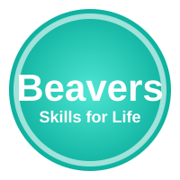

Beaver Badges
Beavers collect badges to celebrate new skills and adventures. From trying new foods to learning how to camp, every moment counts. Below are some of the core badges our young people love working towards.

Adventure Badge
For exploring the outdoors, taking part in mini hikes, and discovering nature.
Creative Badge
Awarded for craft projects, music, storytelling, and sharing imaginative ideas.
Community Impact
Recognises Beavers who help their community, support charities, and show kindness.
Parents can help Beavers progress by chatting about badge requirements at home and recording achievements in Online Scout Manager. Speak to the leadership team if you need a copy of the latest badge book or would like to suggest a new activity.